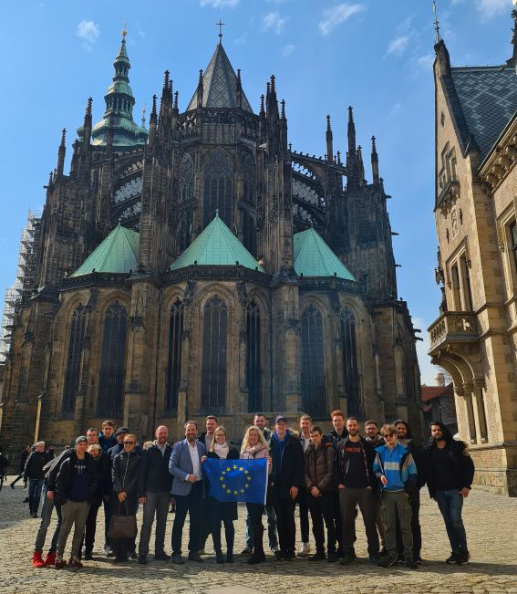

14 - 23 marca 2022 r. - Wyjazd uczniów ZSM nr 1 do Rakovnika w ramach projektu unijnego Erasmus plus[ 2022-03-24 ]

14 - 23 marca 2022 r. - Wyjazd uczniów ZSM nr 1 do Rakovnika w ramach realizacji projektu unijnego Erasmus plus pt. EDU-Play 4.0: współpraca młodzieży trzech krajów przy projektowaniu i budowie systemów mechatronicznych.
Wraz z drugą częścią projektu Erasmus plus w dniach
14 - 23.03.2022 r. uczniowie naszej szkoły wyjechali do szkoły partnerskiej
SPSEK w Rakovniku. Myślą przewodnią tego wyjazdu była kontynuacja budowy urządzenia typu
flipper, a dokładnie pola gry.
W trakcie wyjazdu uczniowie podzielili się na cztery grupy, które były odpowiedzialne kolejno za: projektowanie i druk elementów 3D, montaż owych elementów na polu gry, lutowanie oraz łączenie sprzętu elektroniczno-elektrycznego, a ostatnia grupa była odpowiedzialna za dokumentację multimedialną.
Drugiego dnia pobytu zostaliśmy zaproszeni przez stronę czeską na grę terenową, aby zapoznać się z infrastrukturą oraz zabytkami miasta. Kolejną atrakcją była wspólna zabawa w pobliskim aquaparku oraz gra w kręgle w grupach międzynarodowych. Mieliśmy również okazję zwiedzić kilka zabytkowych obiektów w okolicy Rakovnika m.in.
królewski zamek Krivoklat z pierwszej połowy XIII wieku, pobliskie
Muzeum Motocykli, zabytkowe
Muzeum Piwowarstwa w Pilznie. Udało nam się również odbyć ciekawy krajobrazowo spacer w okolicy rzeki
Berounka.
Na większą uwagę zasługuje natomiast wycieczka do Pragi. Podczas zwiedzania stolicy Czech mieliśmy okazję zobaczyć Zamek Praski, na którym znajdują się cztery kościoły w tym Katedra św. Wita, cztery pałace oraz Złota Uliczka. Następnie zobaczyliśmy Most Karola, Staromiejską Wieżę Mostową, Muzeum Narodowe, a zwiedzenie Pragi zakończyliśmy na Rynku Staromiejskim pod Zegarem Astronomicznym.
Wraz z postępem prac projektowych zauważyliśmy, że uczniowie ze wszystkich szkół partnerskich czyli Zespołu Szkół Mechanicznych nr 1 w Krakowie, Berufsbildende Schule 1 w Moguncji oraz Średniej Szkoły Przemysłowej w Rakovniku byli coraz lepiej zintegrowani, a komunikacja przebiegała bez najmniejszych przeszkód. Doskonała kooperacja pozwoliła sprawnie zakończyć tę część projektu.
Opracował: Mateusz Dąbroś, uczeń klasy 3 Tau Technikum Mechanicznego nr 15 w ZSM nr 1 w Krakowie.
Opiekunami uczniów w trakcie wyjazdu byli: mgr Alicja Grzywaczyk, mgr Eliza Kargol - nauczyciele języka angielskiego oraz mgr inż. Waldemar Nowak - nauczyciel przedmiotów zawodowych i Kierownik Szkolenia Praktycznego w ZSM nr 1.